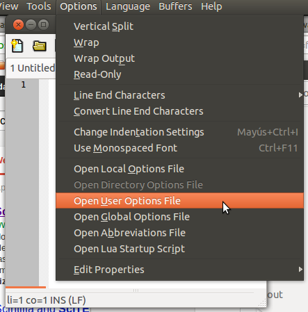

Linux: Configurar SciTE de forma permanente

SciTE es el editor de texto que mas se acerca a Notepad++, y como no soy purista reconozco que en Windows hay cosas que están mucho mas buenas que en Linux. Un buen ejemplo es Notepad++.
Bueno la cuestión con este editor es que si lo abrís y configuras cositas como “Mostrar números de línea” o “Codificar en UTF8“, cuando cerrás la aplicación tus personalizaciones se pierden ¬¬.
La solución es abrir el archivo de configuración que SciTE nos da para almacenar nuestras preferencias (ver imagen) y pegar lo siguiente:
|
1 2 3 4 5 6 7 8 9 10 11 12 13 14 15 16 17 18 19 20 21 22 23 24 25 26 27 28 29 30 31 32 33 34 35 36 37 |
############################### # Configuración personalizada # ############################### # Posicion position.left=400 position.top=100 # Alto y ancho position.width=1000 position.height=500 # Mostrar numeros de linea line.margin.visible=1 # "4+" indica que por defecto reserva 4 espacios pero se expande si le hace falta mas espacio. line.margin.width=4+ # Codificación UTF8 por defecto code.page=65001 # Mostramos el toolbar toolbar.visible=1 # Mostramos el statusbar statusbar.visible=1 # Establecemos la fuente monoespaciada a nuestro gusto font.monospace=font:!Bitstream Vera Sans Mono,size:10 # La fuente monoespaciada font.base=$(font.monospace) font.small=$(font.monospace) font.comment=$(font.monospace) font.text=$(font.monospace) font.text.comment=$(font.monospace) font.embedded.base=$(font.monospace) font.embedded.comment=$(font.monospace) font.vbs=$(font.monospace) |
La configuración está comentada así que van a poder seleccionar lo que les interesa, y lo que no, lo borran.
Listo, guardalo y disfruta de este gran editor.
Chau!


Pingback: Links d’interés #edutictac (weekly) - Planeta EduTicTac
¡Excelente! hace mucho que buscaba la forma de hacer que mis cambios en scite fuesen permanentes y recién pude hacerlo gracias a vos.
Muchas gracias de nuevo y sigue así.
¡Saludos!
Hola, ¿cómo se puede hacer que scite trabaje en modo “.LOG” similar al notepad de windows?
es decir, al abrir un fichero que comienza por .LOG inserta automáticamente la fecha y la hora con cada ENTER que se pulse…
gracias…
Lo conseguí por mí mismo!:
Emula el modo .LOG del notepad de windows en SciTE (probado en linux)
Añadir a SciTEUser.properties (archivo de opciones de usuario):
command.name.12.*=InsertaFechaHora
command.12.*=InsertaFechaHora
command.subsystem.12.*=3
command.mode.12.*=savebefore:no
command.shortcut.12.*=Enter
Añadir a SciTEStartup.lua (script de inicio Lua):
function InsertaFechaHora()
local Linea1, esLog, esLogMayus
Linea1 = editor:GetLine(0)
esLog = string.sub(Linea1,1,4)
esLogMayus = string.upper (esLog)
if esLogMayus == “.LOG” then
editor:AddText(“nn——————–n”)
editor:AddText(os.date(“%d.%b.%Y__%Hh:%Mm”))
editor:AddText(“n——————–n”)
end
end
Veo que el formulario no ha respetado las identaciones (espacios o tabuladores) que yo tenía..
vuelvo a copiarlo a ver si las coge:
Añadir a SciTEUser.properties (archivo de opciones de usuario):
command.name.12.*=InsertaFechaHora
command.12.*=InsertaFechaHora
command.subsystem.12.*=3
command.mode.12.*=savebefore:no
command.shortcut.12.*=Enter
Añadir a SciTEStartup.lua (script de inicio Lua):
function InsertaFechaHora()
local Linea1, esLog, esLogMayus
Linea1 = editor:GetLine(0)
esLog = string.sub(Linea1,1,4)
esLogMayus = string.upper (esLog)
if esLogMayus == “.LOG” then
editor:AddText(“nn——————–n”)
editor:AddText(os.date(“%d.%b.%Y__%Hh:%Mm”))
editor:AddText(“n——————–n”)
end
end
nada, yo las veo pero cuando pulso publicar, lo publica sin tabuladores…..
Huy perdona que no he revisado el blog en una semana. ya no uso scite, ahora uso sublime text que es muuuucho mejor.
Salu2!
# Dejo esta colaboración por si sirviese de algo,
# Configurar SciTE para que al hacer doble clic sobre los archivos, se abran en la ventana existente en vez de en una nueva
——————–
# Buscar si existe el archivo y si contiene la opción a modificar
grep -i “check.if.already.open” /usr/share/scite/SciTEGlobal.properties
# Editar el fichero
sudo vi /usr/share/scite/SciTEGlobal.properties
# Buscar el patrón tecleando la barra “/” y pegando despúes el patrón de la opción para situarnos sobre ella.
/check.if.already.open
# Descomentar la opción. Borrar la almohadilla pulsando “x” cuando el cursor esté sobre esta
# Si está a 0 deberá ponerse a 1
#check.if.already.open=1 –> check.if.already.open=1
# Para guardar. Pulsar Esc y después escribir
:wq